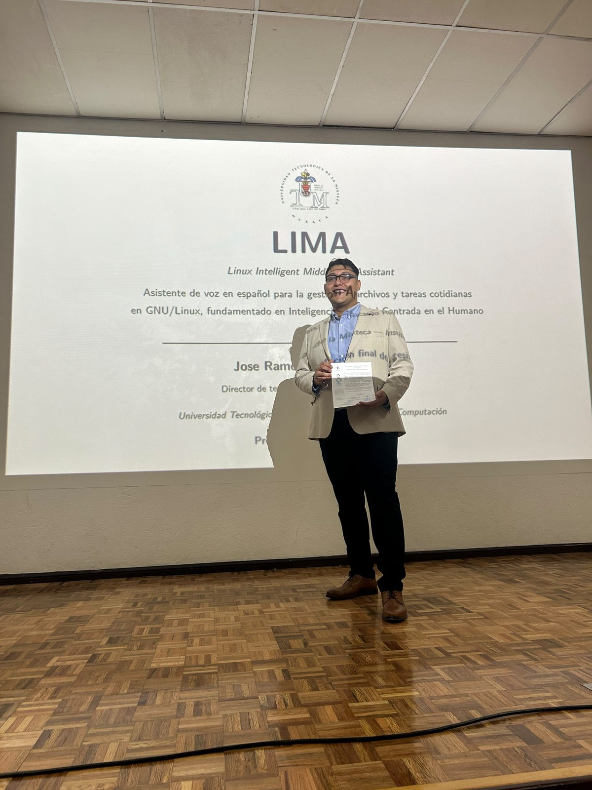
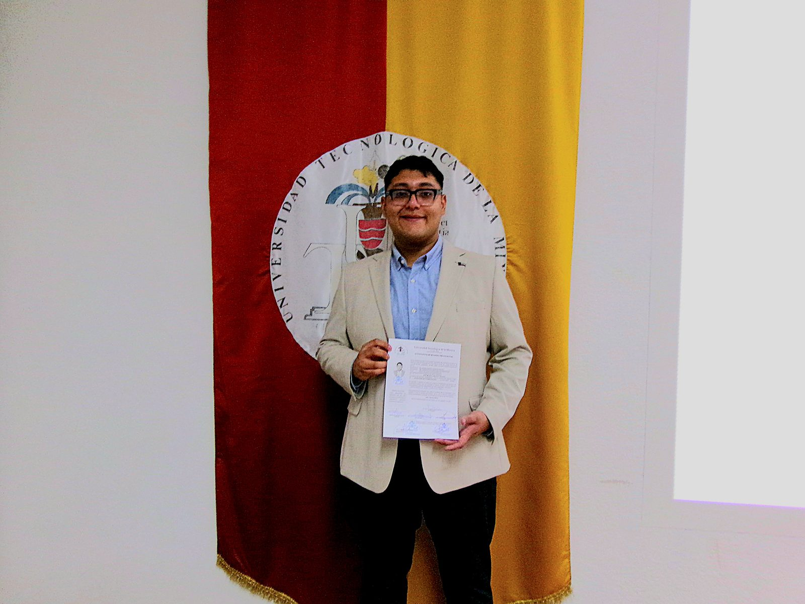
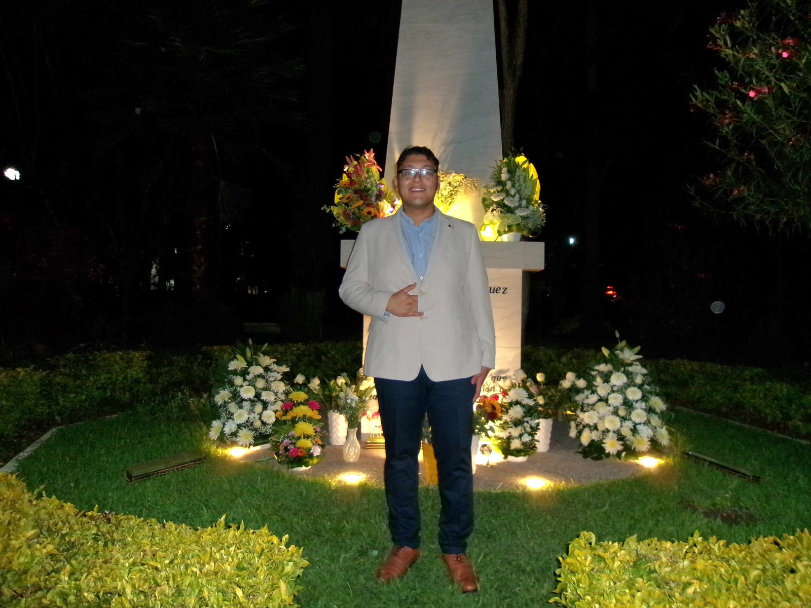

📸 El examen profesional
El 11 de septiembre de 2026 presenté el examen profesional en las instalaciones de la Universidad Tecnológica de la Mixteca. Al concluir, el jurado deliberó y determinó aprobarme por unanimidad; acto seguido me tomó la protesta universitaria como Ingeniero en Computación.



🎬 El momento
El momento en que me convertí en Ingeniero en Computación (≈ 2 min).
📝 Resumen
El presente trabajo de tesis describe el diseño, desarrollo y evaluación de LIMA (Linux Intelligent Middleware Assistant), un software de asistencia por voz que permite a usuarios hispanohablantes interactuar con el sistema operativo GNU/Linux mediante comandos de voz en español.
La problemática que motivó este trabajo radica en que la interfaz de línea de comandos de GNU/Linux, pese a su potencia, constituye una barrera significativa para usuarios no especializados. Operaciones cotidianas de administración de archivos exigen memorizar y componer comandos cuya sintaxis resulta críptica, lo que limita la adopción de este sistema operativo en contextos donde sus ventajas —costo nulo, seguridad, personalización— serían especialmente valiosas.
El sistema integra herramientas de reconocimiento automático del habla, modelos de lenguaje de gran escala para la interpretación de intenciones, síntesis de voz para la retroalimentación y una interfaz gráfica que presenta de forma transparente las operaciones a ejecutar. El desarrollo se fundamentó en los principios de Inteligencia Artificial Centrada en el Humano (HCAI), priorizando la transparencia, la seguridad del usuario y la facilidad de uso.
La evaluación del sistema se realizó mediante un conjunto de datos de 250 tareas representativas de interacción con GNU/Linux —gestión de archivos, información del sistema, control de procesos, redes, permisos, búsqueda web, creación de proyectos y apertura de aplicaciones—, pruebas de usabilidad con usuarios de la comunidad universitaria y una prueba de tiempo de completitud que contrasta la interacción por voz con la búsqueda manual de comandos, en la que los participantes resolvieron la tarea un 66.6 % más rápido con el asistente.
📊 Resultados clave
La hipótesis central quedó respaldada: usuarios sin experiencia previa completaron tareas reales por voz sin asistencia. El conjunto de datos, el reporte de usabilidad y los resultados crudos están disponibles en el sitio web de LIMA.